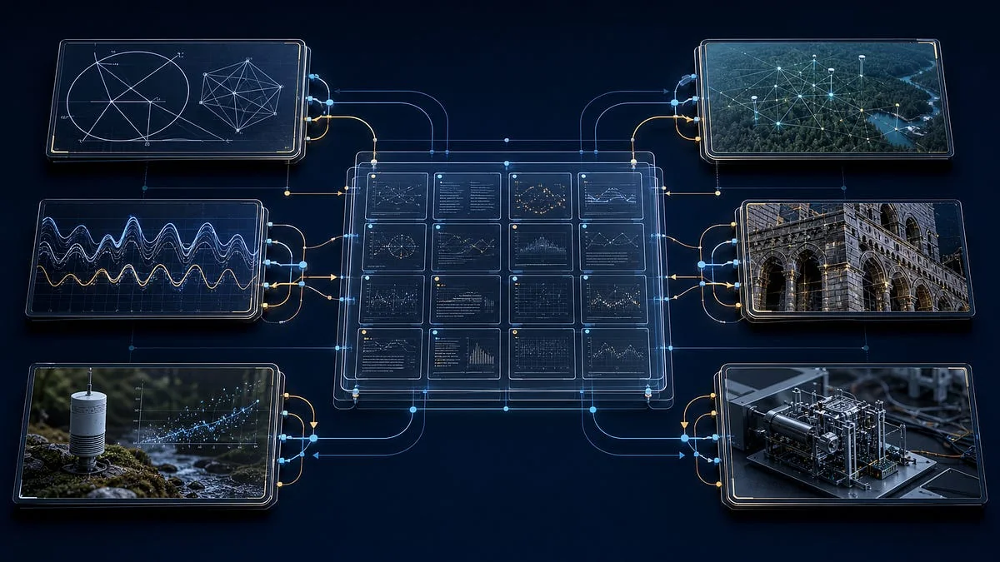

What is actually being asked?
Identify the proposition, scope and strongest alternative explanation before interpreting the title.
A searchable map of Gary Leckey’s public Harmonic Nexus notes. It gives a reviewer a route through orientation, evidence methods and frontier questions without presenting author commentary as formal research or independent validation.
Public boundary These are direct author-published notes. They are not peer-reviewed publications, engineering proof, customer evidence, investment evidence or provider endorsement.

The publication’s own start, index and scope notes establish the intended reading order. Use them before interpreting an individual proposition.
Loading the orientation route.
The catalogue helps a reader explore unusual or cross-field ideas without collapsing a question, a source and a validated conclusion into one state.
Identify the proposition, scope and strongest alternative explanation before interpreting the title.
Read the linked author source, then use the formal register for DOI, platform and verification context.
Look for a measurable test, null model, stop condition or independent review before connecting the note to capability.
Loading evidence boundary.
Loading catalogue scope.
Filter by reading theme or search the titles. Every card retains its original public source and publication date.
Loading public research notes.
The Research register keeps Zenodo, ResearchGate, company source and author commentary records separate. The Evidence room then shows what each public record establishes—and what it does not.